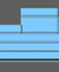

分析器(Profiler)所记录的场景示例中的事件以不同的颜色表示。这些颜色可用于快速解释分析器结果。有关不同分析事件的说明，请参见分析器解释示例。
注： 某些颜色会多次使用：它们在不同的类别中表示不同的内容。
| 事件 | 颜色 | 说明 |
|---|---|---|
|
脏传播 |
粉红色和紫色 | |
|
拉力解算 |
深绿色 | |
|
正向或解算管理器解算 |
桃红色、褐色和棕色 | |
|
设置时间 |
浅绿色 | |
|
Qt 事件 |
 | 浅蓝色 |
|
VP2 渲染 |
浅蓝色 | |
|
VP2 拉力更新 |
浅/深黄色和蓝色 | |
|
VP2 推力或定向更新 |

|
浅/深蓝色 |
|
GPU 覆盖 CPU 使用率 |
浅/深黄色 | |
|
缓存恢复 |
黄色 | |
|
缓存跳过 |
灰度 | |
|
Blue Pencil |
蓝色 |
并非每个颜色均会显示在分析快照中，因为某些事件不会与另一些事件同时发生。例如，解算管理器(Evaluation Manager)处于禁用状态时脏传播事件才会发生，而仅当“解算管理器”(Evaluation Manager)处于启用状态时 GPU 覆盖 CPU 使用率等事件才会发生。